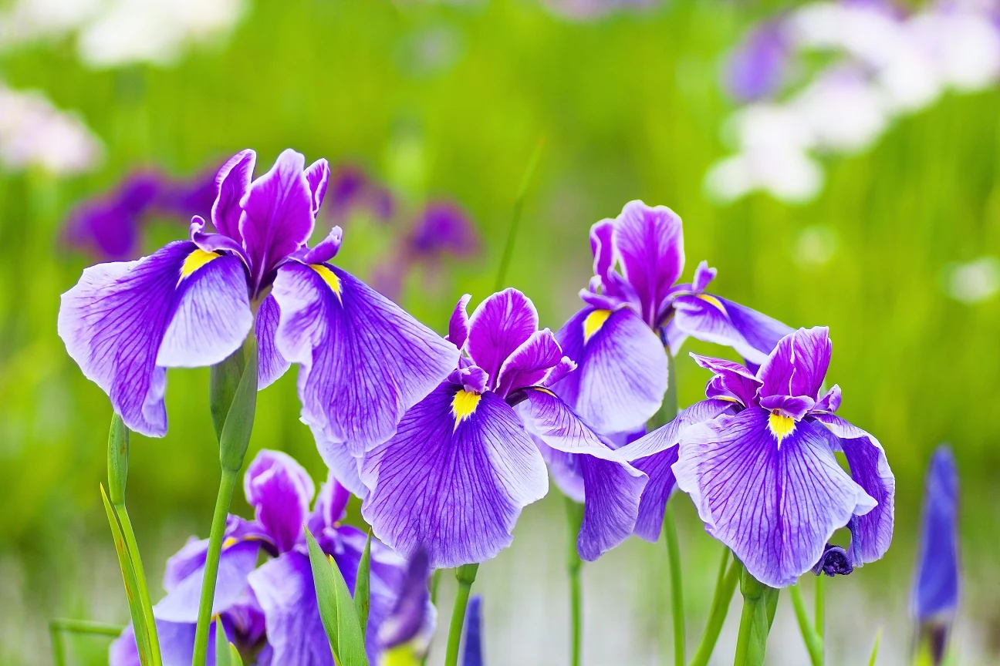
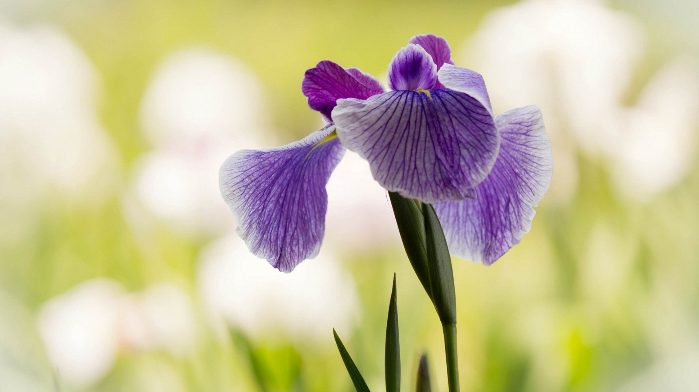

Iris
About Irises
Irises (botanical name Iris spp.) are named after the Greek goddess who rides rainbows. More than 250 species make up the genus Iris. The most common irises are the bearded iris, but they can be crested (beardless) as well. Irises flower from late spring to early summer. Irises attract butterflies and hummingbirds.
Growing Irises
Irises are a hearty plant and very resilient. Irises are a full-sun plant. They are best planted during the late summer and early fall. They don't require any special techniques, are deer-resistant and, depending on the variety, will rebloom after the winter.